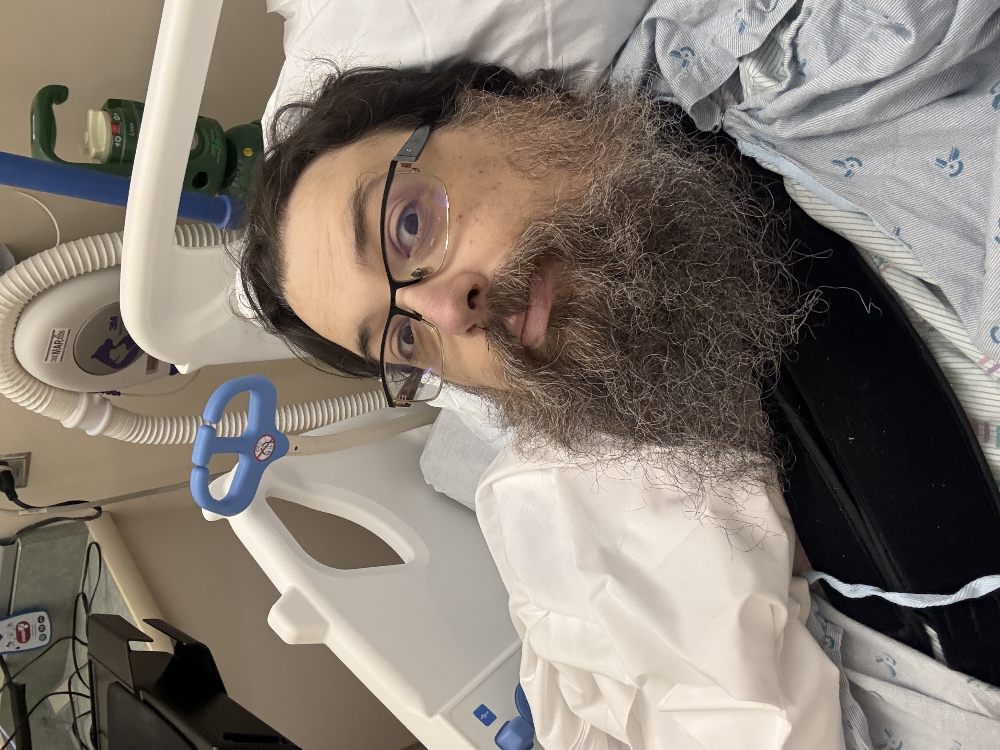

My journey having shoulder replacement surgery while attending Olympic College

This website will document my recovery from shoulder surgery.
For a more detailed look at what this surgery consists of click here
Mayo Clinic Shoulder Replacement Procedure
This is the general timeframe I'm looking at:
- Weeks 0-2 rest and healing, limited mobility and reliance on pain medicaions.
- Weeks 2-4 involve limited movement outside of the sling and doing rehab to increase shoulder stength and mobility.
- Weeks 6-8 more movement allowed without the use of a sling. Weight restrictions generally removed, rehab as nessesary